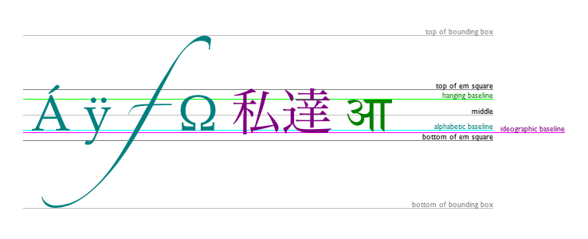

Introduction to Canvas

Rodrigo Silva de Melo
Full Stack Developer @ Labtrans
The <canvas> element
<canvas id="canvas" width="150" height="150">
fallback content
</canvas>Coordinate system
Rendering Context
- CanvasRenderingContext2D
- WebGLRenderingContext
const canvas = document.getElementById('mycanvas');
const context2d = canvas.getContext('2d');
const contextWebgl = canvas.getContext("webgl"); //"experimental-webgl"
Simple Shapes
- fillRect(x, y, width, height)
- strokeRect(x, y, width, height)
- clearRect(x, y, width, height)
Drawing rectangles
const element = document.getElementById('canvas2');
const ctx = element.getContext('2d');
ctx.strokeStyle = "#f00";
ctx.fillStyle = "#000";
ctx.fillRect(10, 10, 100, 100);
ctx.strokeRect(120, 10, 100, 100);
ctx.fillRect(10, 120, 100, 100);
ctx.clearRect(20, 130, 80, 80);
Paths
- A path is a list of subpaths
- subpaths can be of different shapes, curved or not
Basic Path Methods
- beginPath()
- moveTo(x, y)
- closePath()
- fill()
- stroke()
Basic Path Methods
- lineTo(x, y)
- arc(x, y, radius, startAngle, endAngle, anticlockwise)
- arcTo(x1, y1, x2, y2, radius)
- bezierCurveTo(cp1x, cp1y, cp2x, cp2y, x, y)
- quadraticCurveTo(cpx, cpy, x, y)
- rect(x, y, width, height)
lineTo
//ctx.lineTo(x, y);
ctx.strokeStyle = 'red';
ctx.fillStyle = 'green';
ctx.beginPath();
ctx.moveTo(10, 10);
ctx.lineTo(100, 100);
ctx.stroke();
ctx.beginPath();
ctx.moveTo(300, 10);
ctx.lineTo(300, 100);
ctx.lineTo(200, 50);
ctx.closePath();
ctx.fill();
arc
//ctx.arc(x, y, radius, startAngle, endAngle, anticlockwise);
ctx.beginPath();
ctx.arc(45, 45, 40, 0, Math.PI * 2);
ctx.stroke();
ctx.beginPath();
ctx.arc(145, 45, 40, 0, Math.PI, true);
ctx.fill();
ctx.beginPath();
ctx.arc(45, 145, 40, 0, Math.PI / 2);
ctx.stroke();
ctx.beginPath();
ctx.arc(145, 145, 40, 0, Math.PI / 2, true);
ctx.fill();
arcTo
//ctx.arcTo(x1, y1, x2, y2, radius);
ctx.beginPath();
ctx.moveTo(100, 20);
ctx.arcTo(100, 100, 10, 20, 30);
ctx.stroke();
ctx.beginPath();
ctx.moveTo(300, 20);
ctx.lineTo(300, 70);
ctx.arcTo(300, 150, 150, 50, 45);
ctx.fill();
bezierCurveTo
//bezierCurveTo(cp1x, cp1y, cp2x, cp2y, x, y);
ctx.beginPath();
ctx.moveTo(50,20);
ctx.bezierCurveTo(210, 20, 180, 100, 50, 150);
ctx.stroke();
ctx.beginPath();
ctx.moveTo(375,40);
ctx.bezierCurveTo(375, 37, 370, 25, 350, 25);
ctx.bezierCurveTo(320, 25, 320, 62.5, 320, 62.5);
ctx.bezierCurveTo(320, 80, 340, 102, 375, 120);
ctx.bezierCurveTo(410, 102, 430, 80, 430, 62.5);
ctx.bezierCurveTo(430, 62.5, 430, 25, 400, 25);
ctx.bezierCurveTo(385, 25, 375, 37, 375, 40);
ctx.fill();
Fail
quadraticCurveTo
//quadraticCurveTo(cpx, cpy, x, y);
ctx.beginPath();
ctx.moveTo(50,20);
ctx.quadraticCurveTo(150, 30, 50, 150);
ctx.stroke();
ctx.beginPath();
ctx.moveTo(375,25);
ctx.quadraticCurveTo(325, 25, 325, 62.5);
ctx.quadraticCurveTo(325, 100, 350, 100);
ctx.quadraticCurveTo(350, 120, 330, 125);
ctx.quadraticCurveTo(360, 120, 365, 100);
ctx.quadraticCurveTo(425, 100, 425, 62.5);
ctx.quadraticCurveTo(425, 25, 375, 25);
ctx.stroke();
Path2D
- implements all path methods
- can combine multiple Path2D objects
- not supported in all browsers
Path2D
const triangle = new Path2D();
triangle.moveTo(20, 150);
triangle.lineTo(50, 190);
triangle.lineTo(100, 110);
triangle.closePath();
const circle = new Path2D(triangle);
circle.arc(170, 60, 50, 0, 2 * Math.PI);
const rectangle = new Path2D();
rectangle.rect(250, 10, 100, 100);
rectangle.addPath(circle);
const svgPath = new Path2D('M10 10 h 80 v 80 h -80 Z');
svgPath.addPath(rectangle);
ctx.fill(svgPath);
Text
- fillText(text, x, y [, maxWidth])
- strokeText(text, x, y [, maxWidth])
- font = same syntax as the CSS font
- textAlign = left, right, center, start, end
- textBaseline = top, hanging, middle, alphabetic, ideographic, bottom
Drawing Text
ctx.font = '60px sans-serif';
ctx.fillText('Leeroy ', 50, 50);
ctx.font = '60px "Roboto"';
ctx.strokeText('Jenkins', 250, 50);
ctx.fillText('Jenkins', 250, 120, 50);
textAlign
ctx.textAlign = 'start';
ctx.fillText('Leeroy', 220, 50);
ctx.textAlign = 'center';
ctx.fillText('Leeroy', 220, 100);
ctx.textAlign = 'end';
ctx.fillText('Leeroy', 220, 150);
ctx.textAlign = 'left';
ctx.fillText('Leeroy', 220, 200);
ctx.textAlign = 'right';
ctx.fillText('Leeroy', 220, 250);
textBaseline
you got it?
textBaseline
ctx.textBaseline = 'alphabetic';
ctx.fillText('alphabetic', 10, 50);
ctx.textBaseline = 'middle';
ctx.fillText('middle', 140, 50);
ctx.textBaseline = 'hanging';
ctx.fillText('hanging', 220, 50);
ctx.textBaseline = 'ideographic';
ctx.fillText('ideographic', 310, 50);
ctx.textBaseline = 'top';
ctx.fillText('top', 440, 50);
ctx.textBaseline = 'bottom';
ctx.fillText('bottom', 475, 50)
What?
textBaseline
ctx.strokeStyle = '#f00';
ctx.moveTo(0, 50);
ctx.lineTo(560, 50);
ctx.stroke();
Yes!
Colors
ctx.fillStyle = '#FF0000';
ctx.fillRect(5, 5, 50, 150);
ctx.fillStyle = 'rgb(255, 106, 0)';
ctx.fillRect(60, 5, 50, 150);
ctx.fillStyle = 'rgba(255, 106, 0, 0.5)';
ctx.fillRect(115, 5, 50, 150);
ctx.fillStyle = 'hsla(24, 100%, 50%)';
ctx.fillRect(170, 5, 50, 150);
ctx.fillStyle = 'hsl(24, 100%, 50%)';
ctx.fillRect(225, 5, 50, 150);
ctx.fillStyle = 'red';
ctx.fillRect(280, 5, 50, 150);
Linear Gradient
//createLinearGradient(x0, y0, x1, y1)
const horizontalGradient = ctx.createLinearGradient(0, 0, 400, 0);
horizontalGradient.addColorStop(0, 'green');
horizontalGradient.addColorStop(0.5, 'yellow');
horizontalGradient.addColorStop(1, 'red');
ctx.fillStyle = horizontalGradient;
ctx.fillRect(0, 0, 400, 50);
const verticalGradient = ctx.createLinearGradient(0, 0, 0, 200);
verticalGradient.addColorStop(0, '#0000cc');
verticalGradient.addColorStop(1, '#66ccff');
ctx.fillStyle = verticalGradient;
ctx.fillRect(0, 55, 400, 100);
Radial Gradient
//createRadialGradient(x0, y0, r0, x1, y1, r1);
const gradient = ctx.createRadialGradient(100, 100, 80, 100, 100, 0);
gradient.addColorStop(0,'red');
gradient.addColorStop(1,'white');
ctx.fillStyle = gradient;
ctx.fillRect(0,0,200,200);
const gradient2 = ctx.createRadialGradient(300, 100, 100, 300, 100, 20);
gradient2.addColorStop(0,'#0f0');
gradient2.addColorStop(0.5,'#f00');
gradient2.addColorStop(1,'#00f');
ctx.fillStyle = gradient2;
ctx.fillRect(200, 0, 200, 200);
Pattern
//createPattern(image, repetition)
const astronaut = document.getElementById('astronaut');
const pattern = ctx.createPattern(astronaut, 'repeat');
ctx.fillStyle = pattern;
ctx.fillRect(0, 0, 500,250);
Shadow
ctx.shadowOffsetX = 8;
ctx.shadowOffsetY = 8;
ctx.shadowBlur = 7;
ctx.shadowColor = 'grey';
ctx.fillStyle = '#f00';
ctx.fillRect(10, 10, 100, 100);
ctx.beginPath();
ctx.arc(200, 10, 50, 0, Math.PI);
ctx.fill();
ctx.font = '60px sans-serif';
ctx.fillText('Aliens', 260, 100);
Canvas State
Canvas states are stored on a stack. Every time the save() method is called, the current drawing state is pushed onto the stack. Each time the restore() method is called, the last saved state is popped off the stack and all saved settings are restored.
Tranformations
- translate(x, y)
- rotate(angle)
- scale(x, y)
- resetTransform()
Translate
//translate(x, y);
ctx.save();
ctx.fillRect(10, 10, 80, 80);
ctx.translate(200, 100);
ctx.fillStyle = '#f00';
ctx.fillRect(10, 10, 80, 80);
ctx.restore();
ctx.fillRect(400, 10, 80, 80);
Rotate
//rotate(angle);
ctx.save();
ctx.fillStyle = 'red';
ctx.fillRect(100, 30, 100, 100);
ctx.save();
ctx.rotate((Math.PI / 180) * 25);
ctx.fillStyle = 'blue';
ctx.fillRect(100, 30, 100, 100);
ctx.restore();
ctx.restore();
ctx.fillRect(250, 30, 20, 100);
Scale
//scale(x, y);
ctx.font = '60px sans-serif';
ctx.fillText('Leeeeeeeeroy!', 20, 50);
ctx.scale(-1, 1);
ctx.fillText('Leeeeeeeeroy!', -420, 150);
ctx.resetTransform();
ctx.scale(0.5, 1.2);
ctx.fillText('Leeeeeeeeroy!', 20, 200);
Drawing Image
The image source can be an HTMLImageElement, an HTMLVideoElement, an HTMLCanvasElement or an ImageBitmap.
Drawing Image
The drawImage() method of the Canvas 2D API provides different ways to draw an image.
- drawImage(image, dx, dy)
- drawImage(image, dx, dy, dWidth, dHeight)
- drawImage(img, sx, sy, sWidth, sHeight, dx, dy, dWidth, dHeight)
drawImage
const dog = new Image();
dog.src = './canvasPresentation/img/dog.png';
dog.addEventListener('load', () => {
ctx.drawImage(dog, 0, 0);
ctx.drawImage(dog, 150, 10, 64, 64);
ctx.drawImage(dog, 250, 10, 200, 200);
});
drawImage
dog.addEventListener('load', () => {
ctx.drawImage(dog, 0, 0);
ctx.drawImage(dog, 53, 37, 34, 28, 150, 10, 128, 128);
});
Pixel manipulation
The getImageData() method of the Canvas 2D API returns an ImageData object representing the underlying pixel data for a rectangular area of the canvas. The ImageData has three attributes: width, height, data. The data attribute is array containing the data in the RGBA order, with integer values between 0 and 255.
Pixel manipulation
The putImageData() method of the Canvas 2D API paints data from the given ImageData object onto the canvas.
Grayscale example
const jake = new Image();
jake.src = './canvasPresentation/img/jake.jpg';
jake.addEventListener('load', () => {
ctx.drawImage(jake, 0, 0);
const imageData = ctx.getImageData(0,0,jake.width, jake.height);
let data = imageData.data;
for (let i = 0, lenData = data.length; i < lenData; i += 4) {
var avg = (data[i] + data[i + 1] + data[i + 2]) / 3;
data[i] = avg; // red
data[i + 1] = avg; // green
data[i + 2] = avg; // blue
}
ctx.putImageData(imageData, jake.width + 1, 0);
});
Animations
- You need to clear the canvas every frame
- Use window.requestAnimationFrame()
- remember to use save() and restore() when needed
Animation example
const canvas = document.getElementById('canvas25');
const ctx = canvas.getContext('2d');
const ball = { x: 25, y: 80, velocity: 5, radius: 25 };
const drawBall = () => {
ctx.clearRect(0, 0, canvas.width, canvas.height);
ctx.beginPath();
ctx.arc(ball.x, ball.y, ball.radius, 0, Math.PI * 2, true);
ctx.closePath();
ctx.fill();
ball.x += ball.velocity;
if (ball.x + ball.velocity > canvas.width ||
ball.x + ball.velocity < 0) {
ball.velocity = -ball.velocity;
}
window.requestAnimationFrame(drawBall);
};
drawBall();
Controlling FPS
const animate = (drawFunction, interval, then = performance.now()) => {
let now = performance.now();
let elapsed = now - then;
if (elapsed > interval) {
then = now - (elapsed % interval);
// Just `then = now` is not enough. Frame executes in 16ms (60fps) so
// the loop iterates 7 times (16*7 = 112ms) until
// delta > interval === true
// Eventually this lowers down the FPS as
// 112*10 = 1120ms (NOT 1000ms).
drawFunction();
}
requestAnimationFrame(() => animate(drawFunction, interval, then));
};
*based on http://codetheory.in/controlling-the-frame-rate-with-requestanimationframe/
Controlling fps example
const ball15 = { x: 25, y: 50, velocity: 5, radius: 25 };
const ball30 = { x: 25, y: 100, velocity: 5, radius: 25 };
const ball60 = { x: 25, y: 150, velocity: 5, radius: 25 };
//15 fps
animate(() => { drawBall(ball15) }, 1000 / 15);
//30 fps
animate(() => { drawBall(ball30) }, 1000 / 30);
//60 fps
animate(() => { drawBall(ball60) }, 1000 / 60);